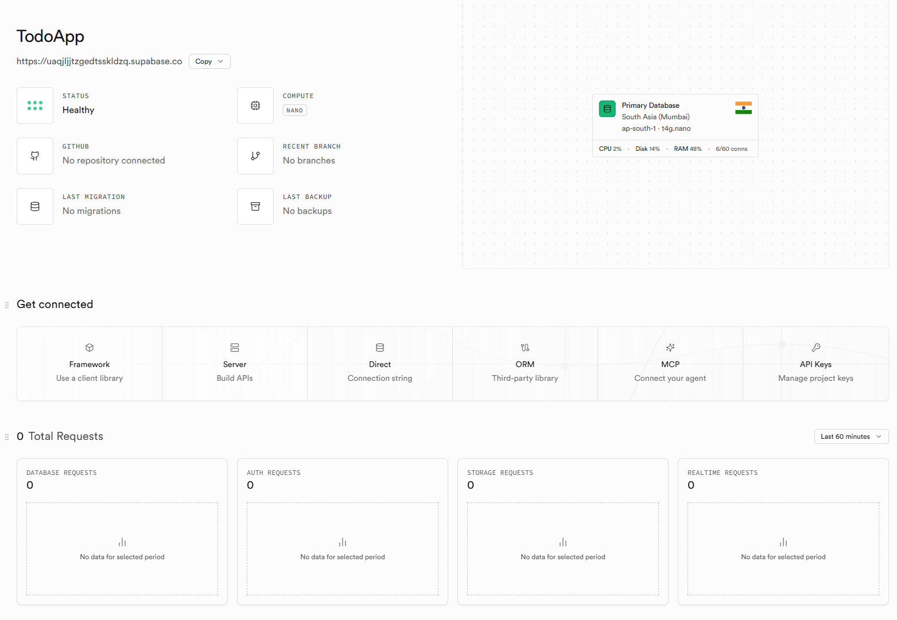
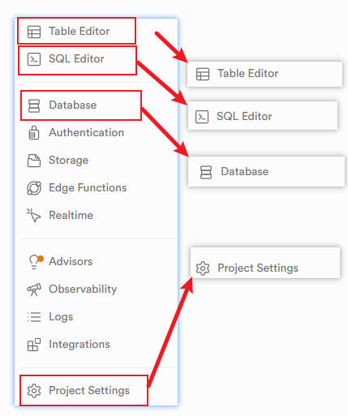
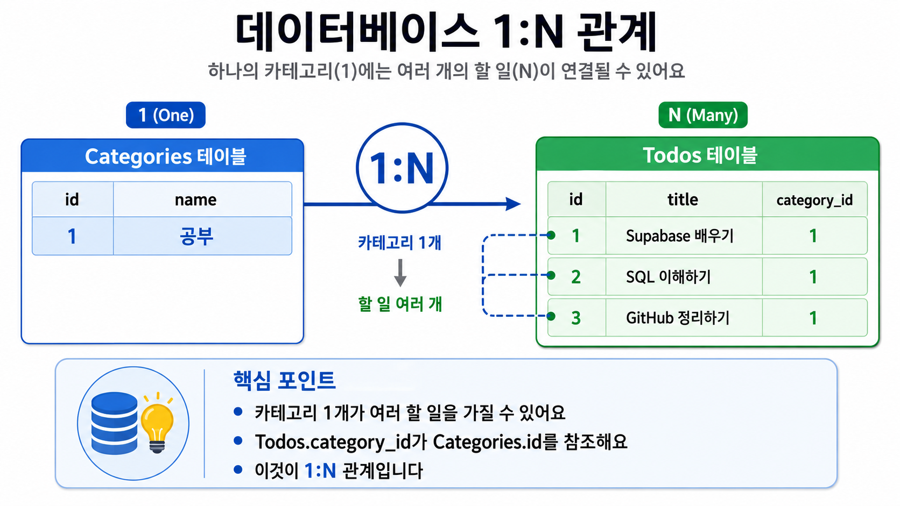
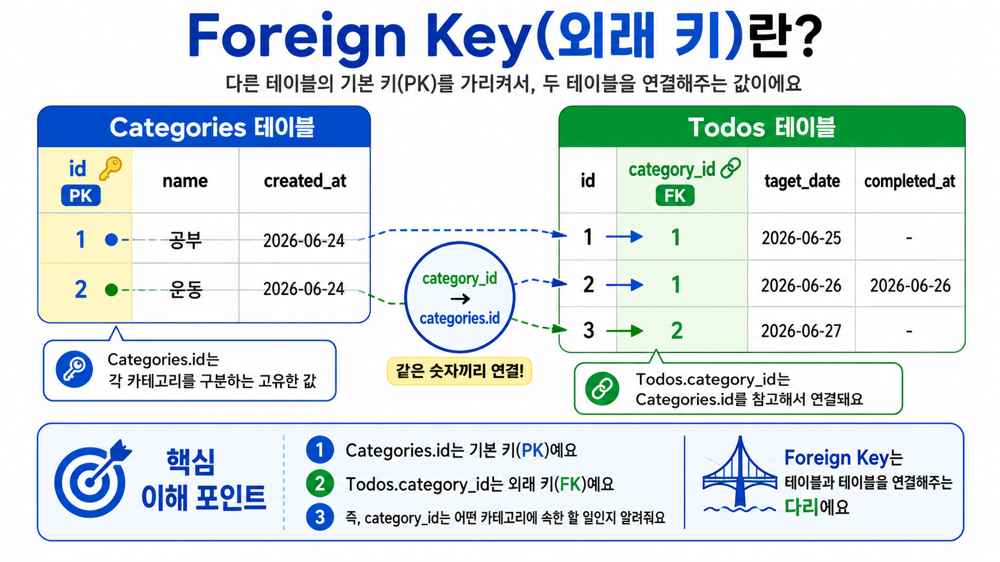
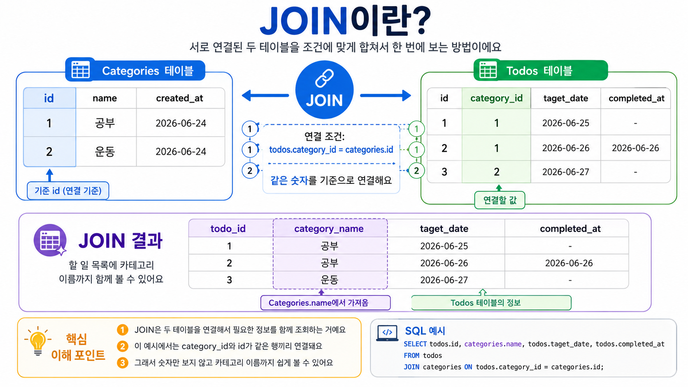
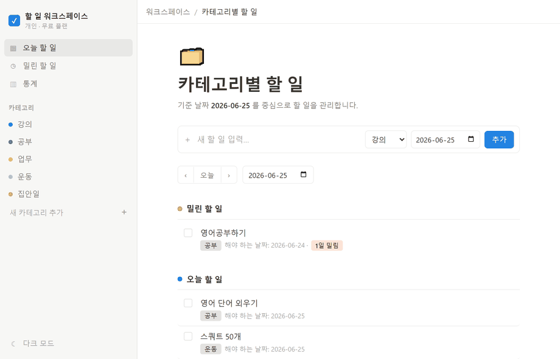

🔗 완성 결과물 · youngkeunahn.github.io/TodoApp
오늘 만들 결과물
데이터가 남는 카테고리 Todo 앱
핵심 기능
- 카테고리별 할 일 관리
- 날짜별 Todo · 완료 체크
- 못 끝낸 할 일 계속 표시
- 카테고리별 남은 할 일 · 평균 달성속도
그리고 끝에는
- GitHub에 코드 올리고
- GitHub Pages로 인터넷에 공개
- 내 폰에서도 열리는 진짜 웹앱
전체 그림
오늘 거치는 다섯 단계
PART 1
데이터베이스 기초
1부 · 개념
데이터베이스가 필요한 이유
데이터 유지
새로고침해도 사라지지 않는다
체계적 관리
여러 데이터를 정리해서 다룬다
검색
필요한 데이터만 골라낸다
함께 사용
여러 사용자가 같은 데이터를 쓴다
1부 · 구조
데이터베이스는 엑셀과 똑같다

1부 · 예시
todos 테이블은 이렇게 생겼다
| id | title | checked | target_date |
|---|---|---|---|
1 |
Supabase 배우기 | false | 2026-06-23 |
2 |
GitHub 올리기 | true | 2026-06-24 |
1부 · SQL 미리보기
SQL은 데이터베이스에게 시키는 말
SELECT
조회한다
SELECT * FROM todos;
→ 목록 불러오기에서 만남
INSERT
추가한다
INSERT INTO todos (title)
VALUES ('공부');
→ 할 일 추가에서 만남
UPDATE
수정한다
UPDATE todos SET checked = true
WHERE id = 1;
→ 완료 체크에서 만남
DELETE
삭제한다
DELETE FROM todos
WHERE id = 1;
→ 삭제 버튼에서 만남
PART 2
Supabase와 테이블 설계
2부 · 도구
Supabase = 쉽게 쓰는 온라인 데이터베이스
- PostgreSQL 기반의 진짜 DB
- 설치 없이 웹에서 바로 사용
- 테이블을 화면에서 클릭으로 생성
- JavaScript로 손쉽게 연결

2부 · 둘러보기
먼저 익힐 4개 메뉴
- Table Editor — 표(테이블)를 만들고 데이터를 본다
- SQL Editor — SQL을 직접 실행한다
- Database — 테이블 관계를 확인한다
- Project Settings — URL과 Key를 가져온다

2부 · 설계
우리 앱의 데이터 흐름
여러 할 일을 묶는 큰 그룹
카테고리 안에 들어가는 하나의 작업
각 할 일이 가지는 완료 상태와 일정
날짜를 기준으로 할 일을 모아 보기
그룹별로 개수·진행률 집계
2부 · 테이블
테이블은 두 개면 충분하다
categories
id— 고유값name— 카테고리 이름created_at— 생성일
todos
id·title·checkedcategory_id— 카테고리 연결target_date·completed_at
2부 · 관계
카테고리 하나에 여러 Todo

PART 3
Supabase 연동 실습
3부 · 실습
Supabase 프로젝트 만들기
3부 · 연결
두 테이블을 연결하는 Foreign Key

3부 · 연결
프론트엔드와 Supabase 잇기
필요한 것
npm install @supabase/supabase-js Project URL anon key
⚠️ 주의
service_role key는 프론트에 절대 넣지 않습니다. 공개용 anon key만 사용하세요.
PART 4
카테고리 Todo 앱 만들기
4부 · 기능
카테고리부터 만든다
4부 · INSERT · SELECT
Todo 추가하고 목록 갱신하기
① 입력값 받기 → 제목 · 카테고리 · 날짜 ② todos에 저장 → INSERT (표에 새 줄 넣기) ③ 목록 다시 조회 → SELECT (표에서 꺼내 보기)
4부 · JOIN
화면에는 카테고리 "이름"이 필요하다
Todo에는 category_id(숫자)만 저장됩니다.
화면에는 "공부" 같은 이름이 보여야 하죠.
그래서 두 표를 같은 번호끼리 짝지어 합칩니다 → JOIN (합쳐 보기)
그러면 번호만 있던 할 일에 이름이 딱 붙어 한 줄로 나와요.

4부 · UPDATE
체크 한 번에 두 가지가 바뀐다
완료로
checked: false → true completed_at: 오늘 날짜
다시 미완료로
checked: true → false completed_at: null
4부 · DELETE
id 기준으로 삭제하고 화면에서 지운다
① 각 Todo 옆에 삭제 버튼 ② 그 Todo의 id로 표에서 삭제 → DELETE (지우기) ③ 목록 다시 불러와 화면에서도 사라지게
체크포인트 🎉
여기까지 왔으면
이미 진짜 DB 앱을 만든 거예요
저장 · 조회 · 완료 · 삭제까지 — 다음은 날짜별 관리입니다.
PART 5
날짜별 Todo 관리
5부 · 날짜
"만든 날"과 "해야 하는 날"은 다르다
target_date
이 할 일을 해야 하는 날짜
created_at
이 할 일을 만든 날짜 (다름)
5부 · 핵심 규칙
완료하지 않은 Todo는
날짜가 지나도 계속 보여준다.
5부 · 화면
밀린 할 일과 오늘 할 일을 나눈다
밀린 할 일
□ [공부] Supabase 배우기 원래 날짜: 2026-06-23
오늘 할 일
□ [업무] SQL 정리하기 날짜: 2026-06-24
5부 · 집계
카테고리별 남은 할 일은 우리 앱에서 센다
이미 불러온 목록에서 안 끝낸 것만 추려요.
카테고리끼리 모아 숫자만 세면 끝 — DB에 다시 안 물어봐요.
오늘 기준 남은 할 일 공부: 2개 업무: 1개 개인: 0개
5부 · 통계
평균 달성속도까지 계산한다
| target_date | completed_at | 달성속도 |
|---|---|---|
| 6/23 | 6/23 | 0일 |
| 6/23 | 6/24 | 1일 |
| 6/23 | 6/25 | 2일 |
5부 · View
복잡한 통계는 View로 묶어둔다
긴 SQL 계산을 매번 쓰지 않아도 됩니다.
우리 앱에서는 평범한 표처럼 꺼내 보기.
category_stats
공부 · 전체 5 / 완료 3 / 남은 2 평균 달성속도: 0.7일 업무 · 전체 4 / 완료 2 / 남은 2 평균 달성속도: 1.5일
PART 6
Git과 GitHub
6부 · Git
Git = 코드의 변경 기록 관리 도구
Repository
프로젝트 저장소
Commit
코드 변경 기록
Push
내 코드를 GitHub로
Pull
GitHub 코드를 내 PC로
6부 · 연동
주소만 넣으면 — 연동 · 커밋 · 푸시
6부 · GitHub
Git은 내 PC, GitHub는 온라인
Git = 내 컴퓨터에서 기록 관리
GitHub = 그 코드를 온라인에 올리는 서비스
포트폴리오 · 공유 · Pages 배포까지
git remote add origin <주소> git branch -M main git push -u origin main
PART 7
GitHub Pages 배포
7부 · 배포
화면은 Pages, 데이터는 Supabase
GitHub Pages
사용자가 보는 웹 화면을 인터넷에 공개
Supabase
데이터 저장과 조회를 담당
7부 · 실습
클릭 몇 번이면 배포 끝
① Repository → Settings ② Pages 메뉴 ③ 배포 소스(Branch) 선택 ④ 배포 URL 확인 후 접속
접속해 Todo 추가·체크·삭제까지 테스트

7부 · 재배포
고치면 push 한 번으로 다시 배포
git add . git commit -m "배포 후 화면 수정" git push # → GitHub Pages가 자동으로 갱신
마무리 · 복습
오늘 우리가 거친 길
- 1데이터베이스 이해 → Supabase 프로젝트 생성
- 2테이블 설계 → 카테고리 Todo 앱 구현
- 3날짜별 관리 · JOIN과 집계로 통계까지
- 4Git 기록 → GitHub 업로드 → Pages 배포
최종 결과물
내가 만든 앱이 인터넷에 살아있다
Supabase DB가 연결된 카테고리 Todo 앱 — 링크 하나로 누구에게나 공유.
